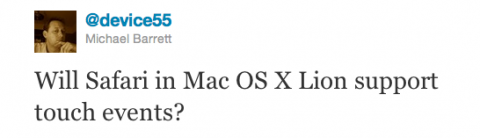

-
A Mac security follow up, and a link
Following up from the other day, Apple has released a software update specifically targeting ‘Mac Defender’. The update adds Mac Defender to the internal black list (which I didn’t know existed) and now the black list is automatically updated. This preference may be configured in the Security panel of System Preferences. I still stand by […]
I tweeted:

Well, will it?
I ask this because when Phil Schiller was demonstrating the updated desktop version of Safari, he kept using iOS language. In particular “double tap to zoom” and just “tap” in general.
You don’t tap on on a mouse or trackpad. You click.
I don’t think this is a mistake. Apple does stuff on purpose. The entire Mac OS X portion of WWDC keynote address emphasized touch gestures throughout. I think this is a deliberate change in nomenclature and it hints at the future.
I think we will see a flat, touch enabled Mac in the near future. Maybe in a year or two. I imagine a ‘real’ Mac with a form factor like a large 17″ iPad – perhaps a skosh thicker, a keyboard and trackpad, probably both bluetooth, and some kind of easel-like dock which allows for pivoting and rotating the computer. The screen will be touch-enabled. It will be expensive the first year, like the MacBook Air was, but will come down in price.
Full screen mode is touch mode
One of the big features of Mac OS X Lion is the built in ability for applications to run full screen. The interfaces of these applications look quite a bit like their iPad cousins. They appear to be optimized to allow for operation with just a mouse. This could easily translate to touch manipulation. The OS already supports various gestures for scrolling, navigation, and whatnot. Direct manipulation of user interface elements via touch would be small step.
An iMacAir is hinted at in hardware
The hardware in both the iPad and iPad 2 plus the hardware built into a MacBook Air shows what’s possible in a slim form factor when you do away with spinning hard drives and replaceable components. The display of the 17″ MacBook approximately the same resolution of the 21″ iMac. Knowing what’s possible in a slim iPad enclosure, it’s not hard to imagine a 17″ display with a 1″ bezel housing a computer with the processor of an iMac with a battery and hard-wired SSD storage.
The new Thunderbolt expansion port makes it possible to offload large file archives to a desktop raid device. Apple appears to be suggesting this configuration on their Thunderbolt information page. Get a fast, slightly smallish, SSD in your computer for fast boot and wake. Keep your giant media library on a fast RAID device.
A hypothetical iMacAir could take advantage of just such a configuration. A 256GB SSD drive would handle the OS, applications, and typical user’s media files. For the power user with a ton of media or developer who needs to run virtual machines, a Thunderbolt RAID drive would work fine.
Touch or keyboard first?
The gesture and full screen features of Lion were announced at a press event called ‘Back to the Mac’ back in October of 2010. Apple made clear their intention to converge ideas and technologies from iOS into Mac OS. The presentation of Lion shows Apple making good on their promise. Gestures are all over the operating system. Full screen applications borrow user interface metaphors from the iPad. Features like Launchpad brings the Springboard to the desktop.
Convergence is happening. Mobile computing and desktop computing are blurring together.
Windows 8 is attempting to bridge this gap as well. Many folks are skeptical of this, especially when modern looking touch capable apps are shown alongside traditional, ugly, Windows Excel. I am less skeptical. Applications like Excel are firmly entrenched and will not change quickly. The integrated touch/keyboard vision of Windows 8 seems like a necessary stepping stone.
Apple appears to be working toward a modal solution instead of an integrated solution.
If full screen applications become full screen touch applications that can be dismissed and called back with a gesture (or restored to desktop mode with a tap) you have a straightforward mechanism dual input styles.
Using touch or using keyboard-plus-gesture becomes a context of how you’re using the device.
Imagine a 17″ iPad like device lying flat on a table for reading, or propped up for a presentation or a movie. When it’s time to do some serious work, you dock the device onto its easel where it begins charging the battery and running off of AC power. The keyboard and trackpad is paired automatically upon docking. Perhaps the dock could provide networking and other connectivity as well. The touch interface is not disabled…but simply becomes secondary in this context (think of the micromanaging manager over your shoulder who finally has a reason to touch your monitor. ick.). A quick gesture brings a full screen application into windowed mode – or slides it out of the way so some number crunching can be done in a spreadsheet. I see this as being as natural and fluid as sitting my laptop down today and plugging in my external monitor. The computer remembers my monitor and rejiggers the display accordingly. I sit down at the keyboard with my laptop and begin typing.
So. That’s my reckless prediction. Keep the receipt for this blog post. If I’m wrong in three years, I’ll refund your money.